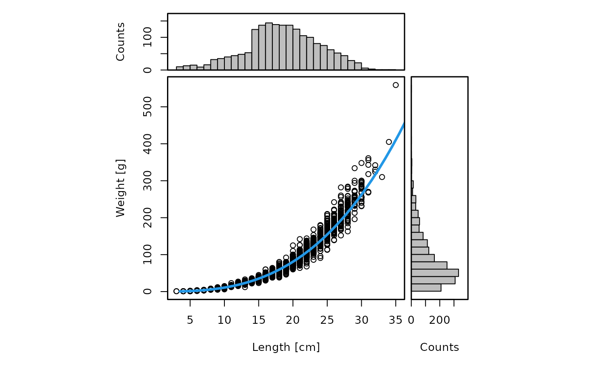

Check and summarize individual weight information in a datras_raw object
Source: R/weight.R
check_weights.RdInspect the length-weight information stored in the CA table of a
datras_raw / DATRASraw object.
Arguments
- x
A
datras_rawobject.- max_length
Optional numeric value giving the maximum length in centimetres to retain for the analysis. Observations above this value are excluded.
- max_weight
Optional numeric value giving the maximum individual weight in grams to retain for the analysis. Observations above this value are excluded.
- plot
Logical. If
TRUE(default), produce diagnostic plots of the observed length-weight relationship and marginal histograms of length and weight.
Value
The input datras_raw object returned invisibly, with a
"weight_check" attribute attached. That attribute is a list with four
elements:
lPars: a data frame with summary statistics for observed lengths,wPars: a data frame with summary statistics for observed weights,parEst: a data frame with estimated length-weight parametersaandb,parEmp: a data frame with lookup length-weight parametersaandb, if available.
Details
The function filters to positive individual weights, optionally excludes very large lengths or weights, summarizes the observed length and weight distributions, fits a log-log length-weight relationship, and optionally plots the observed data together with the fitted curve.
The function first calls DATRAS::checkSpectrum() and then works on the CA
table of the input object.
A linear model of the form $$ \log(IndWgt) = \alpha + b \log(LngtCm) $$ is fitted to the filtered observations, and the corresponding length-weight parameters are returned as: $$ a = \exp(\alpha) $$ and $$ b $$
If available, lookup length-weight parameters are also retrieved from
species_info for comparison.
Examples
## Add numbers at length
dab <- add_numbers_at_length(dab)
#> Warning: Mixed accuracies found in var[[3]]$LngtCode - worst chosen: 1 cm
#> Warning: NAs found in var[[3]]$LngtCode - assumed to be 1 cm
dab <- check_weights(dab)
#> [1] "Length statistics:"
#> min mean median max
#> 1 3 18.94 19 35
#> [1] "Weight statistics:"
#> min mean median max
#> 1 1 85.93 66 559

#> [1] "Estimated LW parameters:"
#> [1] "a = 0.014 b = 2.903"
#> [1] "Lookup LW parameters in the species_info table:"
#> [1] "a = 0.007 b = 3.119"
attr(dab, "weight_check")$parEst
#> a b
#> 1 0.01350792 2.902568
## Restrict to plausible values
dab <- check_weights(dab, max_length = 100, max_weight = 10000)
#> [1] "Length statistics:"
#> min mean median max
#> 1 3 18.94 19 35
#> [1] "Weight statistics:"
#> min mean median max
#> 1 1 85.93 66 559
#> [1] "Estimated LW parameters:"
#> [1] "a = 0.014 b = 2.903"
#> [1] "Lookup LW parameters in the species_info table:"
#> [1] "a = 0.007 b = 3.119"